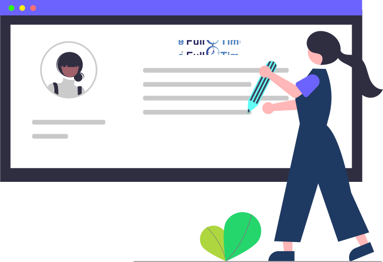

<app-close-modal titleModal="Justificar Atraso"></app-close-modal>

<ion-content>
  <div class="Imagen">
    
      <ion-label style="text-align:center" mode="md" color="medium">
        <h1 style="font-size: 3vw; margin-bottom: 5%;"><b>Reloj Virtual</b></h1>
      </ion-label>
      
  </div>

  <div class="contenido">
    <ion-item>
      <ion-text slot="start"><ion-icon name="person"></ion-icon>&nbsp; Usuario </ion-text> 
      <p class="nombre"> {{ data.fullname }} </p>
    </ion-item>

    <h6> Ingrese la informacion solicitada </h6>

    <ion-item id="open-Atraso" mode="md">
      <ion-label class="is-required" position="floating" >Fecha Atraso</ion-label>
      <ion-input readonly="true" name="fec_inicio" [ngModel]="Fecha" mode="md"></ion-input>
    </ion-item>
    <ion-popover trigger="open-Atraso">
      <ng-template>
        <ion-datetime 
        presentation="date"
        [showDefaultButtons]="true"
          doneText="OK"
          cancelText="Cancelar" 
        name="fec_inicio" 
        color="success" 
        mode="md" 
        min="1990-01-01" max="2050-12-31" 
        (ionChange)="fechaJustificacionChange($event)" 
        [value]="Fecha" 
        required></ion-datetime>
      </ng-template>
    </ion-popover>
  
    <ion-item>
      <ion-label position="floating" class="is-required"><ion-text> Descripción del Atraso</ion-text>  </ion-label>
      <ion-textarea spellcheck="true" placeholder="Ingres el comentario" rows="6" cols="20" 
        (ionChange)="descripcionChange($event)" (ionFocus)="onFocus()" id="textarea"
        type="text" autocapitalize="on" autocomplete="off" clearInput="true" maxlength="254" mode="md" required></ion-textarea>
    </ion-item>
    <br>
    <ion-button shape="round" expand="block" (click)="enviarJustificacion()">Enviar</ion-button>
  </div>

</ion-content>
